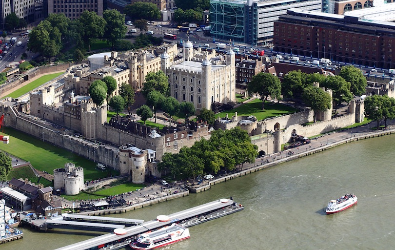

Westminster Abbey is a large, mainly Gothic, church located just to the west of the Palace of Westminster. It is one of the most notable religious buildings in the United Kingdom and is the traditional place of coronation and burial site for English and, later, British monarchs. Most of the present building dates from 1245 to 1272 when Henry III decided to rebuild an old abbey in the Gothic style. The building was later significantly expanded: the Chapel of Henry VII was added between 1503 and 1512, while the two West Front Towers date from 1745.
2. Palace of Westminster
The Palace of Westminster (more widely known as the Houses of Parliament) is the seat of Parliament in the United Kingdom. The present building largely dates from the 19th century when it was rebuilt following a fire in a splendid example of Victorian neo-Gothic architecture. The House of Commons (elected Members of Parliament) is located to the north of the building and is decorated with green leather upholstery, and the House of Lords is located to the south and decorated with red leather upholstery.
3. St. Paul's Cathedral
Built in the 17th century, St. Paul’s Cathedral is one of London’s most famous and most recognizable sights. The Cathedral was heroically saved by firefighters when it was bombed during the Second World War. Its impressive dome was inspired by St Peter’s Basilica in Rome and rises 118 meters (365 ft) to the cross at its summit. It was the tallest building in London from 1710 to 1962, and its dome is also among the highest in the world.
4. Trafalgar Square
Trafalgar Square is a large city square commemorating Lord Horatio Nelson’s victory against Napoleon’s navy at the Battle of Trafalgar in 1805. The central monument within the square is a single tall column on which the figure of Nelson stands gazing over London. His monument is surrounded by four colossal lions and a series of large fountains. Much more than just an open plaza, Trafalgar Square is one of the most famous city squares in the world and has become a social and political location for tourists and Londoners alike.
5. Tower of London

Now home to the British Crown Jewels, the Tower of London was built by William the Conqueror in 1078. It served as a prison from 1100 to the mid twentieth century. This has led to the phrase “sent to the Tower”, meaning imprisoned. Famous prisoners include Sir Thomas More, King Henry VI, Anne Boleyn and Catherine Howard (wives of King Henry VIII) and Rudolph Hess. Today the Tower of London is one of the most popular London tourist attractions.
6. London Eye
Situated on the banks of the River Thames, the London Eye is an enormous, 135 meter (443 ft) high observation wheel carrying 32 exterior glass-walled capsules. It offers fantastic views over central London. The wheel does not usually stop to take on passengers as the rotation rate is slow enough to allow passengers to walk on and off the moving capsules at ground level. It is the most popular paid tourist attraction in the United Kingdom, visited by over 3.5 million people annually.
7. Buckingham Palace
Buckingham Palace is the main residence of Queen Elizabeth II although it is owned by the British state and is not the monarch’s personal property. The Forecourt of Buckingham Palace is used for Changing of the Guard, a major ceremony and tourist attraction. Between May and July the guard changes each morning and on alternate days the rest of the year. Since 1993, the palace’s state rooms have been open to the public during August and September.
8. British Museum
In Los Cabos, the desert joins hands with the sea and the sun here shines 350 days a year! The municipal authority is build out of two of the towns—Cabo San Lucas and San José del Cabo and the conjoining Resort Corridor lies between the two.
9. Tower Bridge
Tower Bridge is a combined bascule and suspension bridge in London, over the River Thames. It is close to the Tower of London, which gives it its name and has become an iconic symbol of London. Construction started in 1886 and took eight years to build. The bridge consists of two towers which are tied together at the upper level by means of two horizontal walkways which are designed to withstand the forces of the suspended sections of the bridge.
9. Big Ben
The 150 year old Big Ben Clock Tower is one of the top tourist attractions in London. The name Big Ben actually refers not to the clock tower itself, but to the 13 ton bell housed within the tower and takes its name from the man who first ordered the bell, Sir Benjamin Hall. The present-day Big Ben bell was constructed in 1858 after a first bell of 16 tons cracked irreparably two years prior. The clock has become a popular attraction and has appeared in many films. In the movie Mars Attacks! for example the Big Ben is destroyed by a UFO attack.